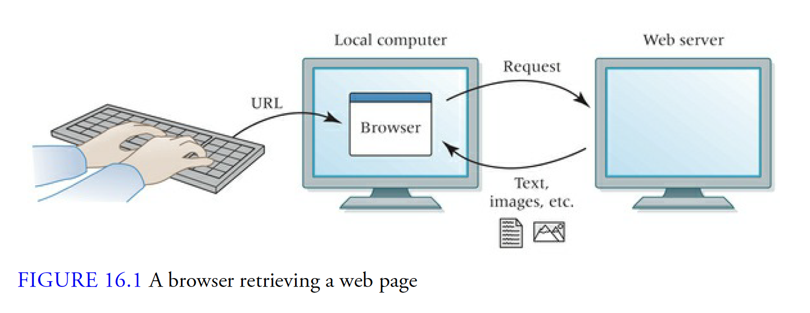

6/23/20
- HTML:
- Hypertext Markup Language
- Hypertext:
- Links
- Markup:
- Format
- Language:
- Vocabulary, syntax, semantics
6/24/20
- Computing devices:
- Physical objects that run a program
- Computing system:
- Group of computing devices
6/25/20
- Computer network:
- A group of intercinnected computing devices capable of sending or receiving data
- Path:
- A sequence of directly connected computing devices that begins at the sender and ends at the receiver

- Routing:
- The process of finding a path from sender to receiver
routing
- Packet:
- Contain a chunk of data and metadata used for routing the packet between the origin and the destination on the Internet

- Node:
- The individual computers on a network
node
- Bandwidth:
- The maximum amount of data that can be sent in a fixed amount of time

6/30/20
- URL:
- Universal/Uniform Resource Locator
- IP address:
- A unique string of numbers that identify computing devices within the network, identify where the data packet comes from and where to send them
- DNS:
- Domain Name System
- ISP:
- Internet Service Provider
7/1/20
- TCP:
- Tranmission Control Protocol, making the data packet and how to send them
- AM:
- Amplitude Modulation
- FM:
- Frequency Modulation
- Port:
- Unique identifier for application
7/2/20
- HTTP:
- Hypertext Transfer Protocol
7/13/20
- String:
- A word, text, a string of character
- Boolean:
- True, false
- Array:
- Contains a group of elements, in order, and the index begins with 0
- Object:
- Collection of properties and they're value
- Conditional:
- Key word:If, use to select when to run certain code
- Iteration:
- The repetition of a process and stop when the requirements are met
7/19/20
- Function:
- Type of routine, reusable segment of code
- Class:
- Object constructor, includes method and properties, used to create object
- Algorithm:
- A series of step to solve the problems
- Linear search:
- Check in the order to see if any element in the array matches the array
- Selection sort:
- Divides the list into two parts, and sort the smalles to largest one
- Insertion sort:
- Iterates, done in-place, divides the list into two parts and sorts to find the location and shifts the values to the correct position
- DOM:
- Document object model
7/24/20
- Abstraction:
- To reduce complexity. Ex: array, function, class, object
- Simulation:
- Predict what will happen, imitation of a process
- Module:
- Can contain serveral routines, can link together
- Event:
- An action or change in state. When an event is fired, it triggers the code to run. Ex: mouseover, click
7/31/20
- Data:
- Numbers, measurement of something
- Information:
- Facts about something, usable knowledge, giving details about something
- Strong typing:
- Type must match, has rules with different types
- Weak typing:
- Doesn't have strick rules with different types
- CSV:
- Comma seperated values